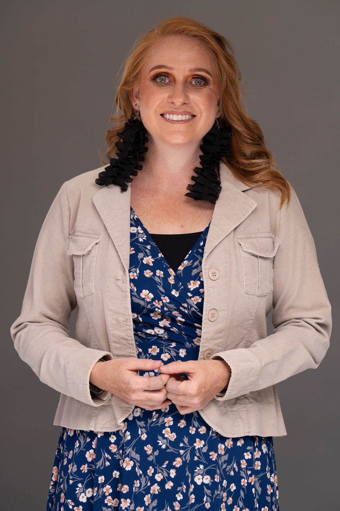
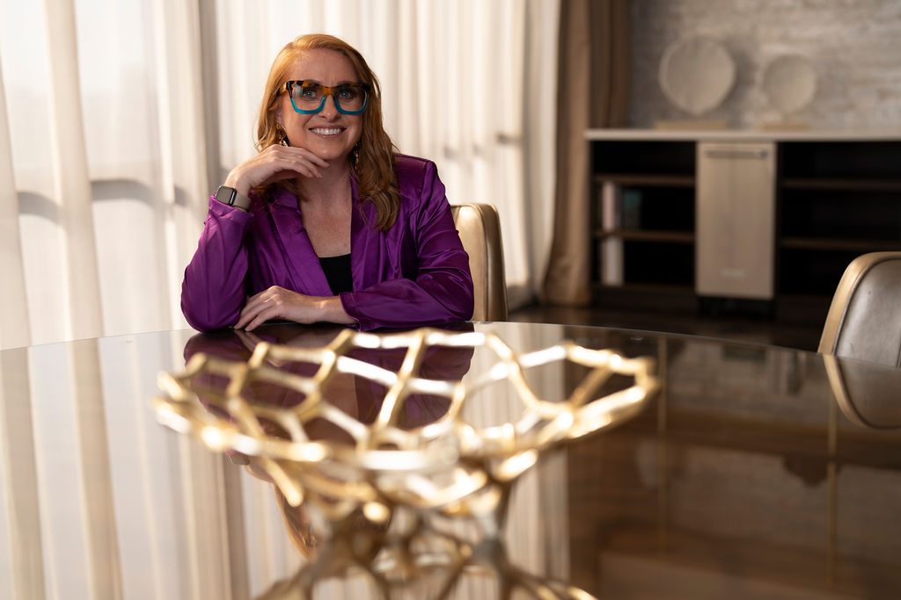

Erica C. Harris
Co-Founder & CFO, The Nest Montessori Network
Erica C. Harris is the Co-Founder and CFO of The Nest, a Cognia-accredited network of Montessori schools in Central Texas. A U.S. Army veteran with a clinical social work background and degrees in psychology and computer science, she writes about the systems and finance behind building schools that last. She lives in the Texas Hill Country with her family.
About

Erica C. Harris is a mission-driven leader with an interdisciplinary background spanning education, mental health, military logistics, and systems operations. She is the Co-Founder and Chief Financial Officer of The Nest, a growing, Cognia-accredited network of Montessori schools in Central Texas serving children from infancy through adolescence.
Erica's career began with ten years of distinguished service in the U.S. Army, where she repeatedly served in leadership roles above her rank. As a logistics sergeant, she led unit-wide turnarounds, recovered millions in lost assets, and co-authored standard operating procedures still in use today. That training in precision, integrity, and systems thinking now shapes how she builds schools: the operational architecture, the finances, and the culture underneath the classrooms.
She holds dual bachelor's degrees in Psychology and Computer Science and a Master of Science in Clinical Social Work with a specialization in children and families. Her clinical career included supporting children in trauma shelters, serving as a drug and alcohol counselor, and providing hospice care for families navigating end-of-life transitions. Those years shaped her conviction that safe, responsive environments and genuine human connection matter most in seasons of uncertainty and growth.
A Montessori parent turned school founder, Erica writes and speaks about the systems, finance, and operations behind education that lasts. Her vision rests on a simple belief: when children are entrusted with real responsibility and meaningful work, they do not just rise. They lead.
Ventures
- The Nest Montessori Network A Cognia-accredited network of Montessori schools in Central Texas, serving children from infancy through adolescence.
- Classroom Comeback A consultancy redesigning learning spaces for schools and educators.
- Nest Paint A children's coloring book brand encouraging creative expression.
- Perch (in development) A Montessori learning record app for guides and families.
Press & Speaking
Speaking and media inquiries welcome.